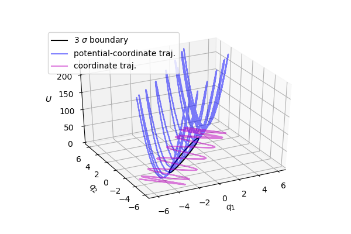
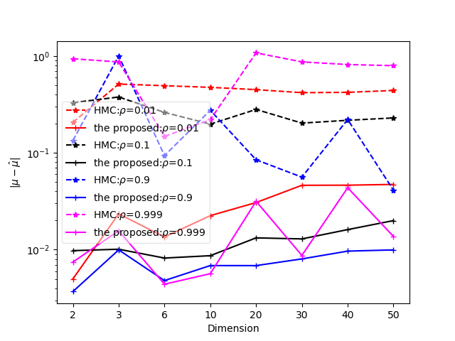

Table of Contents
Title
基于位置和动量变换的哈密顿蒙特卡洛算法
Abstract
哈密顿蒙特卡洛对于高维和高相关度的概率抽样结果不甚理想，其原因在于势能梯度影响了仿真轨迹:在最小主成分方向的势能梯度最大，因此仿真轨迹优先移动方向与概率在空间的分布不一致。仿真轨迹无法快速遍历概率空间，其后果是无法准确地抽样高相关的概率。
本文研究发现，通过同时进行坐标变换和动量变换，可以使得轨迹移动方向与概率的空间分布一致，从而获得理想的抽样轨迹，进而可以准确地对高相关度的概率进行抽样。
Introduction
哈密顿蒙特卡洛(HMC)可以对高维概率空间进行抽样[]。这种方法存在两个主要特点：即算法运行不够稳定和抽样结果不够准确[]。另一个容易忽视的特点是该方法的抽样结果也不够稳定，似乎抽样的准确程度在一定范围内随机浮动。
近期的研究表明，不稳定的主要原因在于哈密顿蒙特卡洛没有遵守能量守恒原则，而且接受概率公式也存在问题[]。能量不守恒的缺陷似乎导致了一个奇怪的特性，即HMC对低维概率的抽样误差较大，而对高维并且高相关的概率抽样效果似乎相对较好。
如果基于能量守恒原则对哈密顿蒙特卡洛进行改造，对低维概率的抽样准确度将有较大的提高，但对高维并且高相关的概率抽样效果则更差[]。因此我们遇到了新的问题：遵守能量守恒的方法和不遵守能量守恒的方法分别适用于不同类型的概率，或者说不遵守能量守恒的方法似乎仍然有其适用范围。这个问题实际上是：如何改造(基于能量守恒原则的)哈密顿蒙特卡洛，使其适用于所有类型的概率？
事实证明，问题的答案实际上与能量守恒无关，只是遵守能量守恒的算法使这个问题的紧迫性凸显出来。如果我们查看高相关度概率的仿真轨迹（图１，协方差矩阵为eq.1），就会发现仿真轨迹的优先移动方向与概率覆盖的区域不一致。在这个例子中，轨迹优先沿着概率第二主成分的方向（黑色椭圆的短轴）移动，而在第一主成分的方向（黑色椭圆的长轴）移动较慢。对于高维空间和高相关的概率，其影响更为明显，导致抽样效果较差。
\[\Sigma = \begin{bmatrix}1& 0.99 \\ 0.99 &1\\\end{bmatrix}\]
这种现象的根源在于，轨迹受到势能梯度的影响较大，导致轨迹在势能梯度大的方向发生震荡。而消除这种现象的方法为：对相空间变量进行变换，使轨迹优先向着较大主成分的方向移动。

本文所采用的方法与Riemann Hamiltonian Monte Carlo[] (RHMC)的区别在于，后者仅仅对动量进行变换，而本文方法同时对位置和动量进行变换。二者之间第二个区别在于本文方法基于能量守恒仿真，而RHMC基于原来的HMC算法，即不遵守能量守恒。二者的另一个 区别是采用了不同的接受概率公式：本文采用基于能量守恒的修正公式，而HMC的接受概率存在问题。HMC存在的固有缺陷使得动量变换的优势无法充分发挥出来。
Content
哈密顿系统中，总能量等于动能和势能之和： \[H=K+U\] 哈密顿公式指出了变量对时间的导数和能量对变量的偏导数之间具有如下关系，其中(x,p)为相空间变量。 \[\dot x=\frac{dK}{dp}\] \[\dot p=-\frac{dU}{dx}\] 根据玻尔兹曼，势能一般为待抽样概率函数的负对数 \[U(x)=-\log \pi(x)\]
Coordinate Transformation
为了方便讨论，本文假设势能是正定二次型: \[U(x)=\frac{(x-\mu)^T \Sigma^{-1} (x-\mu)}{2}\] 动能一般采取二次函数，本文采取以下形式的动能： \[K(p)=\frac{p^T \Sigma p}{2}\] 以上定义的势能二次型矩阵和动能二次型矩阵为逆矩阵，因为这样可以产生理想的仿真轨迹：仿真轨迹与主成分方向一致。
根据以上的讨论，对于高相关的概率，在原来相空间内仿真轨迹不理想，因此改为在变换后的相空间内进行仿真，因而需要对位置和动量进行变换。
设势能能可以表示为原变量x或者变换后的变量z： \[U(x) = \frac{(x-\mu)^T \Sigma^{-1} (x-\mu)}{2} = \frac{z^T z}{2}\] z和x之间有如下变换关系： \[z=\Sigma^{-\frac{1}{2}} (x-\mu)\] \[x=\Sigma^{\frac{1}{2}} z + \mu\] 类似的，动能可以表示为原变量p或者变换后的变量b： \[K(p)=\frac{p^T \Sigma p}{2}= \frac{b^T b}{2}\] 和b和p之间的变换关系： \[b=\Sigma^{\frac{1}{2}} p\] \[p=\Sigma^{-\frac{1}{2}} b\] 位置和动量的时间变化率存在以下变换关系： \[\dot z=\Sigma^{-\frac{1}{2}} \dot x\] \[\dot b=\Sigma^{\frac{1}{2}} \dot p\] 将哈密顿公式代入上式，得到在新的相空间(z,b)内进行仿真的哈密顿公式： \[\dot z= \Sigma^{-\frac{1}{2}} \frac{dK}{dp}\Bigr|_{p=\Sigma^{-\frac{1}{2}} b}\] \[\dot b= -\Sigma^{\frac{1}{2}} \frac{dU}{dx}\Bigr|_{x=\Sigma^{\frac{1}{2}} z + \mu}\]
算法实现
- 重新生成动量p，并保持总能量守恒
- 将x记录为x0
- 将(x,p)变换为新的相空间变量(z,b)
- 在新相空间内进行哈密顿仿真得到(z*,b*)
- 将(z*,b*)变换回原来的相空间变量(x*,p*)
- 利用Metropolis公式，按条件接受x*
除了以上的算法过程，一个实际的实现还需要自动调节时间步长和总能量，这两个参数从实现角度确保了算法能稳定准确地进行抽样。调节时间步长的根据是看仿真过程中是否出现能量极值，而总能量的调节则根据接受概率的大小：接受概率小时需要降低总能量，反之亦然。
哈密顿仿真算法对时间步长尤其敏感，因此在burnin阶段后需要停止调节时间步长。总能量在一定程度上与时间步长的作用呈互补关系，因此在burnin阶段后可以继续调节总能量，从而弥补固定时间步长参数产生的影响。
Parameter estimation
到目前位置，我们都假定已经知道势能的参数μ 和Σ。
然而对于一个目标势能来说，这些参数是未知的，需要从抽样样本中估计出来。
这个过程就像一个循环，从样本中估计参数，然后更新势能函数，随后使得采样更加准确，然后估计出更准确的参数⋯。
从统计理论可知，正态分布的均值和方差的后验估计的具有确定的解析公式。
虽然我们研究的概率函数不一定服从正态分布，但我们可以假定其服从正态分布，从而利用上面所说的解析公式来更新均值和方差。 以下直接使用教材（Bayesian Data Analysis 3rd, p72）中的公式。
假定给定方差，均值的先验服从正态分布： \[\mu | \Sigma \sim N(\mu_0,\Sigma/\kappa_0)\]
假设方差的先验服从逆wishart分布： \[\Sigma \sim InvWishart_{\nu 0}(\Lambda_0^{-1})\]
则均值和方差的联合后验服从正态-逆wishart分布： \[p(\mu,\Sigma) \propto |\Sigma|^{((\nu_0+d)/2+1)}\text{exp}(-\frac{1}{2}\text{tr}(\Lambda_0 \Sigma^{-1})-\frac{\kappa_0}{2}(\mu - \mu_0)^T \Sigma^{-1}(\mu- \mu_0))\] 则得到如下更新公式。 自由度为： \[\kappa_n = \kappa_0 + n\] 中间变量为： \[ \Lambda_n = \Lambda_0 + S + \frac{\kappa_0 n}{\kappa_{0}+ n} (\bar x - \mu_0)(\bar x - \mu_0)^T\] 方差的后验估计为： \[\hat \Sigma=\frac{\Lambda_n}{\kappa_0+n-D-1}\] 均值的后验估计为 \[\hat \mu = \frac{\kappa_0 }{\kappa_0 +n}\mu_0 + \frac{n}{\kappa_0 + n} \bar x\] 这些符号的意义说明如下：
| 符号 | 说明 |
|---|---|
| \(\Lambda_0\) | 相当于先验 方差之和 |
| \(\kappa_0\) | 先验的自由度 |
| n | 批样本的大小 |
| x | 一批样本 |
| \(\bar x\) | 经验均值 |
| S | 散度矩阵 |
| \(\mu_0\) | 先验均值 |
| \(\hat \Sigma\) | 后验协方差估计 |
| \(\hat \mu\) | 后验均值估计 |
Experimental
我们使用一系列从一般到高度奇异的协方差的多维正态分布进行抽样,对角元为 \(\frac{1}{\rho}\) ，其它元素为 \(\rho\) ，其中 \(\rho\) 从0.01 变化到 0.999。当 \(\rho\) 为0.01时，对应的多维正态分布大致呈半径为10的超球。当 \(\rho\) 接近于1时(如0.999或者0.9），对应的多维正态分布大致类似长度为1的针形。因此这个实验设置涵盖了不同类型的概率分布。
\[\Sigma = \begin{bmatrix}\frac{1}{\rho} & \cdots & \rho \\ \vdots & \ddots & \vdots\\ \rho & \cdots & \frac{1}{\rho}\\\end{bmatrix}\]
抽样结果的衡量标准是协方差矩阵的估计误差。这种方式可能不够理想，但属于定量比较，因此较为客观。为了对本文方法进行全面考察，实验还分别对2维到50维正态分布分别进行抽样。此外，当 \(\rho\) 接近于1时，如果协方差的估计误差也接近于1，则说明估计的协方差矩阵接近于零矩阵，意味着估计误差较大。
图2中，虚线为HMC的估计误差，实线为本文方法估计误差，颜色相同线对应于为同一协方差矩阵，横坐标为变量的维度，纵坐标为协方差的估计误差。对于相关程度较小的概率，如 \(\rho\) 为0.01和0.1，本文方法的估计误差大概比HMC的估计误差小一个数量级。对于相关较大的概率，（如 \(\rho\) 接近于1时，即协方差近似为1矩阵）， HMC的误差估计较大。对于这种相关程度较高的概率，本文方法的估计误差均较小，近似为 \(10^{-2}\) 量级，估计较为准确，并且这个结论适用于多个维度。

图x显示均值的估计误差。与上图相似，相同颜色的实线为本文方法产生的估计误差，而虚线为HMC产生的估计误差。相同颜色的实线一般低于虚线一到两个数量级，这说明本文方法在所有考察的条件下都产生更小的估计误差。 对于较低相关程度的协方差矩阵，即rho为0.01，0.1，HMC能够估计出均值参数。对于相关程度较高的的概率，如rho等于0.9和0.99时，HMC有时能够产生小的估计误差（如30维和50维时），似乎表明HMC更适合高相关的概率抽样。当相关程度更高的概率，如rho等于0.999的状况，HMC无法准确地估计均值。
与本文方法相比，HMC估计误差不仅较大，而且在较大的范围内变动，说明HMC的估计结果不准确并且不够稳定。

结论
对哈密顿蒙特卡洛的位置和动量进行变换可以有效地提高抽样准确程度。